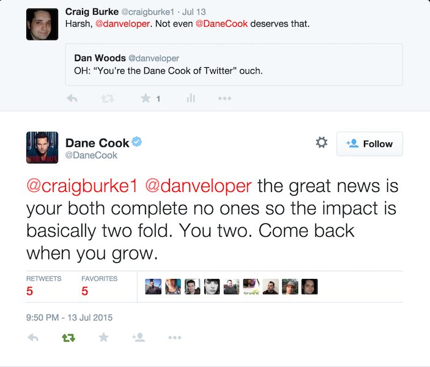
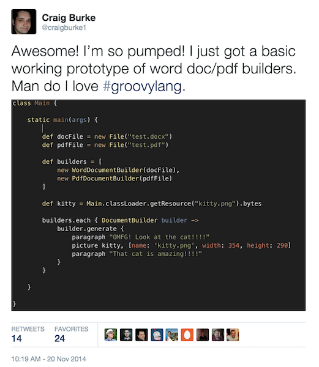

Practical and Stupidly Impractical Groovy DSLs
Craig Burke
About Me
Groovy/Grails Developer at Carnegie Mellon
Creator of the Groovy Document Builder
www.craigburke.com
@craigburke1
Introduction
Background and Definitions
What is a DSL?
A Domain Specific Language (DSL) is a computer programming language of limited expressiveness focused on a particular domain.
— Martin Fowler
What is a DSL?
Makes use of the language and metaphors used by domain experts
Example (Gradle)
apply plugin: 'groovy'
repositories {
jcenter()
mavenCentral()
}
dependencies {
compile 'org.codehaus.groovy:groovy-all:2.4.4'
runtime 'org.postgresql:postgresql:9.4-1201-jdbc41'
}Example (SQL)
INSERT INTO EMPLOYEE (ID, NAME) VALUES (1, 'Craig Burkee');
UPDATE EMPLOYEE SET NAME = 'Craig Burke' WHERE ID = 1;
SELECT ID, NAME FROM EMPLOYEE;
DELETE FROM EMPLOYEE WHERE ID = 1;Example (CSS)
p {
font-size: 12px;
color: #B41F1F;
}
div.content {
width: 100%;
padding: 5px;
border: 1px solid #000000;
}Groovy is Great for DSLs
Groovy Features
Simple Syntax (Less Noise)
Scripting Support
Operator Overloading
Meta-Programming
Simple Syntax
Maps and lists
def map = [language: 'Groovy']
def list = ['foo', 'bar']Command chaining and optional parenthesis
// equivilent to: say(hello).to('Craig')
say hello to 'Craig'Named arguments
class Note {
static from(Map args, String name) {
println "${name} said ${args.message}"
}
}
Note.from 'Craig Burke', message: 'Hey, how are you?'Scripting Support
Java code to print a String
public class ScriptClass {
public static void main(String[] args) {
System.out.println("Hello World");
}
}Equivalent Groovy Code
println 'Hello World'Groovy version can be run without compiling
groovy script.groovyOperator Overloading
a + b | a.plus(b) |
a - b | a.minus(b) |
a * b | a.multiply(b) |
a ** b | a.power(b) |
a / b | a.div(b) |
a % b | a.mod(b) |
a | b | a.or(b) |
a & b | a.and(b) |
a ^ b | a.xor(b) |
a or a | a.next() |
a-- or --a | a.previous() |
a << b | a.leftShift(b) |
a >> b | a.rightShift(b) |
a <⇒ b | a.compareTo(b) |
Getters and Setters
class Person {
String name
String nickName
}
Person person = new Person()Equivilent to person.setName('Craig')
person.name = 'Craig'Equivilent to println person.getName()
println person.nameEquivilent to person.setNickName(person.getName())
person.nickName = person.nameDynamic Properties
Extending the Number class
Number.metaClass.getDollars = { delegate as BigDecimal }
Number.metaClass.getProperty = { String name ->
def rates = [euros: 1.1f, pesos: 0.063f]
delegate * (rates[name] as BigDecimal)
}Adding different currencies together
def total = 20.dollars + 40.euros + 200.pesos
assert total == 76.60Dynamic Methods
class Person {
def methodMissing(String name, args) {
if (name.startsWith('say')) {
String message = (name - 'say').trim()
println message
}
}
}Trying out our dynamic method
Person you = new Person()
you.sayHello()
you."say Craig is Awesome"()Closure Delegation
Defining a simple closure
Closure myClosure = {
name = 'Craig'
printName()
}Methods and properties set to resolve to a NamePrinter object
class NamePrinter {
String name
void printName() {
println "My Name is ${name}!!!"
}
}
myClosure.delegate = new NamePrinter()
myClosure.resolveStrategy = Closure.DELEGATE_FIRST
myClosure()Let’s Get Serious
(Not Really)

Figure 1. Dane Cook: the Dane Cook of Comedy
Who is Dane Cook?
Comedy Albums Have Sold Millions
Voice of Dusty Crophopper from Planes
Estimated Net Worth of $30 million
Rides Around in a Sweet Lamborghini
Twitter Smackdown

A Proposed DSL
'Dane Cook sucks'.watch { tweetedStatus ->
tweet 'Hey @DaneCook, somebody said this:' << tweetedStatus
tweet "LEAVE DANE ALONE, @${tweetedStatus.user.screenName}!!!"
}Case Study: Groovy Document Builder
Generating Documents In Java

Requirements
Simple and Readable DSL for Document Creation
Use Same Code for Word or Pdf Documents
Shouldn’t Require Knowledge of a Complex Library
Proof Of Concept

Early DSL
builder.generate {
paragraph 'OMFG! Look at the cat!'
picture kitty, [name: 'kitty.png', width: 354, height: 290]
paragraph 'That cat is amazing!!!'
}Simple Implementation
class DocumentBuilder {
File file
Document(File file) {
this.file = file
}
void generate(Closure builder) {
builder.delegate = this
builder()
}
abstract void paragraph(String text)
abstract void picture(Map params = [:], byte[] data)
}That Works for a Simple Proof of Concept…
But Things Get Complicated
builder.generate {
paragraph 'Check out this table'
table {
row {
cell 'First Name'
cell 'Last Name'
}
row {
cell 'Craig'
cell 'Burke'
}
}
}I Need To Make Builder
Builder Support
Closure Delegation
BuilderSupport
FactoryBuilderSupport
BuilderSupport
class MyBuilder extends BuilderSupport {
def createNode(name) { /* TODO */ }
def createNode(name, value) { /* TODO */ }
def createNode(name, Map attributes) { /* TODO */ }
def createNode(name, Map attributes, value) { /* TODO */ }
void setParent(parent, child) { /* TODO */ }
void nodeCompleted(parent, node) { /* TODO */ }
}FactoryBuilderSupport
Now We’re Talking
Grails domain class
class User {
String firstName
String lastName
Date birthDate
static constraints = {
firstName blank:false
lastName blank:false
birthDate nullable:false
}
}Let’s Trash This Code
Original
class User {
String firstName
String lastName
Date birthDate
static constraints = {
firstName blank:false
lastName blank:false
birthDate nullable:false
}
}Explicit Types
class User {
String firstName
String lastName
Date birthDate
static Closure constraints = {
firstName([blank:false])
lastName([blank:false])
birthDate([nullable:false])
}
}Why Stop There?
class User {
String firstName
String lastName
Date birthDate
static Closure constraints = {
Map nameConstrants = [blank:false]
['firstName', 'lastName'].each {
"${it}"(nameContraints)
}
delegate.birthDate([nullable:false])
}
}Resources
Books
Domain-Specific Languages (Martin Fowler)
Groovy for Domain-Specific Languages (Fergal Dearle)
Presentations
Groovy Domain Specific Languages
DSL’ing your Groovy
Links
Domain-Specific Languages (Groovy Docs)